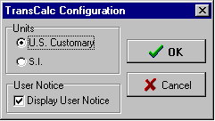

Step 2
Step 2Getting Started
Step 1
Configuration

Before entering the design verification part of the program, it is advisable to run the TransCalc (xconfig.exe) configuration program to be sure the proper units, either US Customary or SI, have been entered correctly in the set up program (which was run during program installation on your computer).